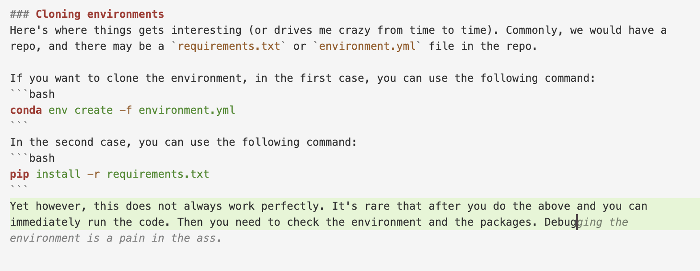

Conda
Conda is a package manager and environment management system that allows you to install, manage, and update packages and dependencies for your Python projects. It provides a flexible and efficient way to handle dependencies, especially for scientific computing and data science applications.
Install Conda
You can either install Conda from Anaconda or Miniconda.
The difference between Anaconda and Miniconda is that Anaconda includes a large number of packages, while Miniconda includes only the core packages.
For full reference of the commonly used conda-related commands, you can refer to Conda Cheatsheet.
Create a new environment
If you want to create a new environment with a specific Python version, you can use the following command:
conda create -n myenv python=3.10
then you can activate the environment by:
conda activate myenv
or
source activate myenv
Obviously, activating the environment is not only necessary after you create a new environment, but also every time you want to use the environment.
Install packages
To install packages, you can use either conda or pip. I prefer using pip because it is more flexible and easier to manage.
pip install numpy
for a specific version, you can use:
pip install numpy==1.21.0
Replicating other’s environments
Here’s where things gets interesting (or drives me crazy from time to time). Commonly, we would have a repo, and there may be a requirements.txt or environment.yml file in the repo.
If you want to clone the environment, in the first case, you can use the following command:
conda env create -f environment.yml
In the second case, you can use the following command:
pip install -r requirements.txt
Yet however, this does not always work perfectly. It’s rare that after you do the above and you can immediately run the code. Then you need to check the environment and the packages. Debugging the environment is a practice that have the following features:
- It’s time-consuming.
- For the most part, you don’t know what you are doing and you can only pray that it works.
- After you successfully debugged the environment, you will find that you’ve learnt nothing.
To add to the fun, when I am writing this article, my cursor AI assistant auto-completed the following sentence:  Yeah, it really is a pain in the ass.
Cloning environments
This is really where we can utilize some tools to make our life easier.
Method 1: Using SCP
I personally really recommend installing conda under the same directory (e.g. /workspace/username/anaconda3)at every server. This gives you the flexibility to clone the environment from one server to another without having to worry about the file’s location.
scp -r /home/username/anaconda3/envs/env_name username@server_ip:/home/username/anaconda3/envs/
immediately after you clone the environment, you can activate the environment by:
source activate env_name
and you’re good to go.
Method 2: Exporting the environment and importing it
For instance, you want to clone environment env_1 to env_2.
First, you can export the environment by:
# if you not in env_1 yet, you can activate it by:
conda activate env_1
# then you can export the environment by:
conda env export > environment.yaml
then you can scp the environment.yaml file to the server where you want to clone the environment.
At the other end (where you want to have env_2), you can import the environment by:
conda env create -f environment.yaml
However, this method is not perfect. Often what you encounter is some packages screaming errors. Then what you can do is to check the environment.yaml file, often the package throwing errors is formatted like this:
- xxx=yyy=zzz
Recursively remove =zzz to check if it works.
However, this method really sucks, try to avoid it.
Method 3: Conda Pack (Highly Recommended)
Conda Pack is a tool that allows you to pack your environment into a single file. This is useful when you want to share your environment with others or when you want to deploy your environment to a server.
To install Conda Pack, you can use the following command:
pip install conda-pack
Packing the environment
On the source machine, you can pack the environment by:
# Pack environment my_env into my_env.tar.gz
conda pack -n my_env
# Pack environment my_env into out_name.tar.gz
conda pack -n my_env -o out_name.tar.gz
# Pack environment located at an explicit path into my_env.tar.gz
conda pack -p /explicit/path/to/my_env
Unpacking the environment
On the target machine, you can unpack the environment by:
# Unpack environment into directory `my_env`
mkdir -p my_env
tar -xzf out_name.tar.gz -C my_env
# Use python without activating or fixing the prefixes. Most python
# libraries will work fine, but things that require prefix cleanups
# will fail.
./my_env/bin/python
# Activate the environment. This adds `my_env/bin` to your path
source my_env/bin/activate
This really made my life a lot easier.
Remainder
Oh yeah, sometimes you may encounter permission issues. You can fix it by:
chmod -R 777 my_env.tar.gz
The 777 means that the file has read, write, and execute permissions for everyone.
I mean it’s not a good practice from a security perspective, but it’s a quick fix. As long as you are sure about what you are doing, you can do it.
For more information, you can refer to the Conda Pack Documentation.